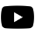
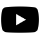

Hoe komt het dat Tesla zijn auto's er zo uniek uit zien
Seb Greefkens
‘’Het gevoel dat je krijgt als je voor het eerst wegrijdt in een Tesla, dat gevoel is niet meer weggegaan. Je voelt dat je in de toekomst stapt. -Franz von Holzhausen’’
Kort na deze uitspraak kwam de cybertruck uit, een auto met een futuristische uitstraling. Het design is behoorlijk controversieel, maar het is een geweldige stap van Tesla en Franz Von Holzhausen. Het merk liep het risico in routine te vervallen. In de auto-industrie is er een simpele vuistregel die eigenlijk alles zegt: “Show them the car.” Maar de Cybertruck is echt andere koek, het is een totaal ander design ten opzichten van de andere modellen. Het komt erop neer dat het uiterlijk van de auto allesbepalend is. Als mensen niet reageren op het design heb je gefaald, of het nu positief is of negatief. Von Holzenhausen heeft ook gebruik gemaakt van de inherente voordelen van elektrische auto’s om bijvoorbeeld een ruime cabine te creëren en veel bagageruimte. De vormgeving van de Cybertruck maakt deze auto zo bijzonder, dit was de eerste stap richting meer futuristische automodellen. Welke factoren zijn nog van invloed geweest op de vormgeving van de auto’s van Tesla?
Wat is de oorsprong van Tesla?
Tesla werd opgericht in 2003, al sinds de oprichting is de missie van Tesla om wereldwijde transitie naar duurzame energie te versnellen. Hoewel het een grandioos idee leek te zijn, was de werkelijkheid anders. De kredietcrisis in 2008 was een genadeslag, een faillissement stond op de tocht. De oprichters zagen het einde al in zicht, totdat Elon Musk zich aandiende om te investeren. Musk investeerde zijn heel privévermogen in een doorstart van Tesla, waardoor de ontwikkeling weer terug op koers lag. Einde 2008 was Musk eigenaar van Tesla en een van zijn belangrijkste stappen naar succes was het in dienst nemen autodesigner Franz von Holzhausen. De autodesigner was de juiste man op de juiste plek en bracht Tesla naar het hogere segment. Vanaf dit moment werd Tesla uniek in hun eigen design.
Waar haalt Tesla inspiratie vandaan?
De inspiratie bij Tesla is een innovatieve waarde creëren, een uniek product maken. Niemand is geboren met innovatie waarde, het zijn bewuste acties die je opbouwt. De achtergrond in de ruimtevaart zorgde voor enthousiasme bij het ontwikkelen van een speciaal design. Musk enorme kennis en werkervaring op verschillende terreinen. De Model S was de eerste Tesla die op de markt kwam. Mensen waren toen al gecharmeerd van het minimalisme in design. De hoogwaardige afwerking, knoppen voor de ruitbediening en voor de spiegelverstelling. En vooral niet onbelangrijk het bedienen via een 17 inch touchscreen. De Model 3 is geïnspireerd op zijn voorganger, de Model S. Het team van Von Holzhausen begon in 2008 aan de auto: hij wist dat om Audi en BMW te verslaan, de auto "mooi en aantrekkelijk moest zijn. De Tesla Model 3, zei Von Holzhausen in opmerkingen van de Los Angeles Times , is "gebaseerd op het idee van minimalisme, dat minder meer is ... extra knoppen, extra schakelaars zijn gewoon teveel." Dit model werd nog meer minimalistisch. Hoekige voertuigen uit de Paul Verhoeven-film leidde uiteindelijk naar een nieuw ontwerp de Cybertruck. De vele onderdelen van de auto hadden een hoekige vorm. Alleen de wielen, stuurwiel en de pook waren rond. Maak van de voorkant de achterkant en je hebt het silhouet van de Cybertruck. Het ecosysteem fascineerde Musk. Het ecosysteem is een meerwaarde rond elektrisch vervoer. Wat dit deel van de strategie echt uniek maakt is de nieuwe hardware en software-architectuur. Hij kon zich geheel vinden in het voorspellen van behoeften en wensen van klanten. Door in te spelen op deze wensen bindt je klanten aan je. Wim Aelen met 46 jaar ervaring in de auto-industrie citeert “dat tesla veel inspiratie ophaalt bij sportmerken als McLaren. Dit zie je duidelijk terug in de Roadster.
Waarom Tesla de veiligste auto is die er rondrijdt
Uit een rapport van de NHTSA blijkt dat je de kleinste kans op letsel hebt in de Model 3. Dit komt door de metalen en aluminium constructie en de vele sensoren die er voor zorgen dat je op tijd wordt gewaarschuwd wat er in je omgeving gebeurt. Tesla's ingenieurs ontwikkelden een actieve veiligheidsfunctie door gebruik te maken van data die zijn verzameld door sensoren. Deze informatie geeft een nauwkeuriger inzicht in de omgeving rond Tesla’s en de verschillende manieren waarop ongelukken gebeuren. Zo kan Tesla steeds nauwkeuriger voorspellen wanneer een ongeval zich kan voordoen en geautomatiseerde technologie inzetten om de impact te beperken of te voorkomen. Bij een crashtest van het dak weerstond de auto vier keer zijn eigen gewicht. De Model 3 van Tesla is op het moment één van de veiligste auto’s in de wereld.

De stijl van Franz Von Holzhausen
De missie van Von Holzhausen was om een "ontwerpcompetentie van wereldklasse" voor Tesla te creëren. Efficiëntie dat was zijn gedachten. Zijn uitgangspunt was schoonheid en mooi zijn, want hij was van mening dat in een competitieve markt het mooiste product eruit springt. Hij wilde de indruk wekken dat een opwindende elektrische auto op verheerlijkte golfkarretjes gingen lijken. Zoals al eerder benoemd is de stijl van Von Holzhausen gebaseerd op minimalisme, eenvoud en perfectie. De Model S is tijdloos modern en toch klassiek volgens Holzhausen.

.png)
Conclusie
Een van de invloedrijkste factoren van Tesla is dat je een auto rijdt met een futuristische uitstraling. Je kunt je afvragen of deze factoren invloed hebben op de keuze die mensen maken bij het kopen van een auto? Deze aparte vormgeving zal niet iedereen kiezen. De benzine auto’s blijven vertrouwd. ‘’Waarom het vertrouwde inruilen voor het nog onbekende’’ Maar stilstand is achteruitgang, wordt er in de volksmond gezegd. Dit zijn vragen die je je kunt stellen. Gezien het behalen van onze klimaatdoelen zullen er mensen zijn die vanuit dat uitgangspunt een elektrische auto kiezen. Andere mensen hebben oog voor vorm en design en willen een “mooi auto” rijden. Wat zeker is dat Elektrisch rijden bij draagt aan de Nederlandse klimaatdoelstellingen. Daarom stimuleert de Rijksoverheid elektrisch rijden. Het voordeel van elektrisch rijden wordt nog groter als er in de komende jaren meer groene stroom beschikbaar komt. Daarnaast is elektrisch rijden schoner en zuiniger.
Andere artikelen


Blijf op de hoogte van de laatste artikelen bij TooQuick.
tstark@voorbeeld.com


 
